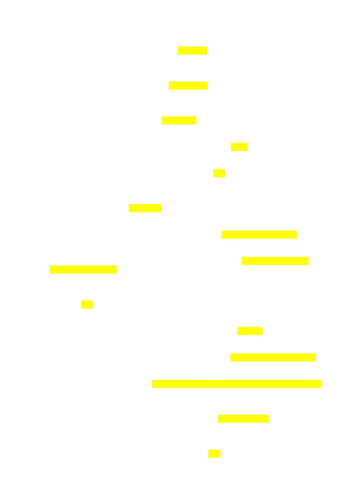
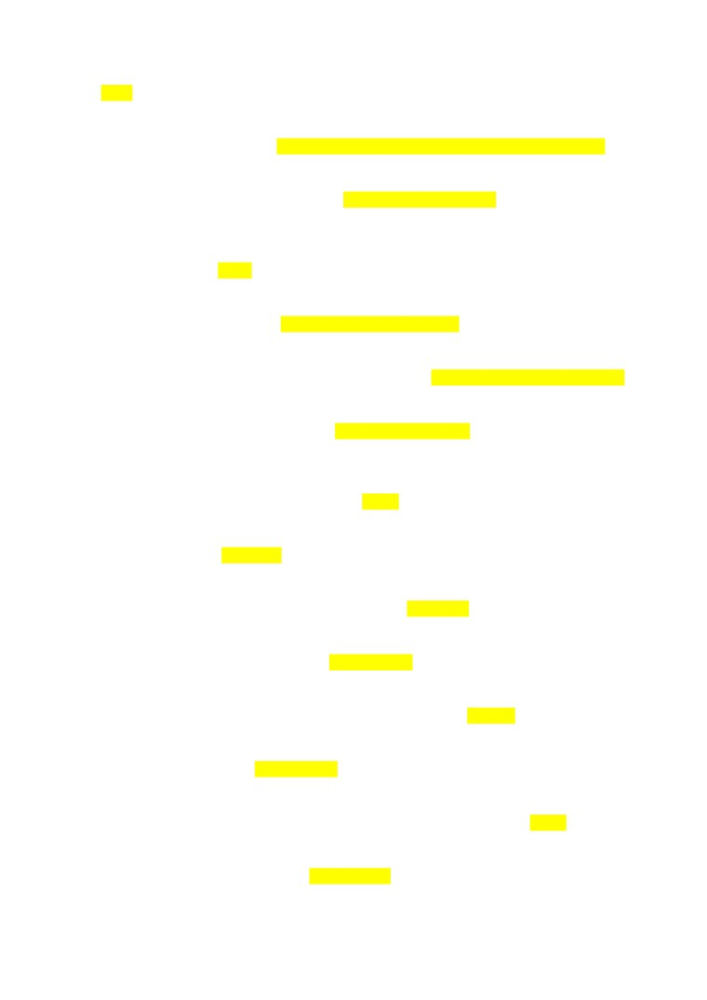
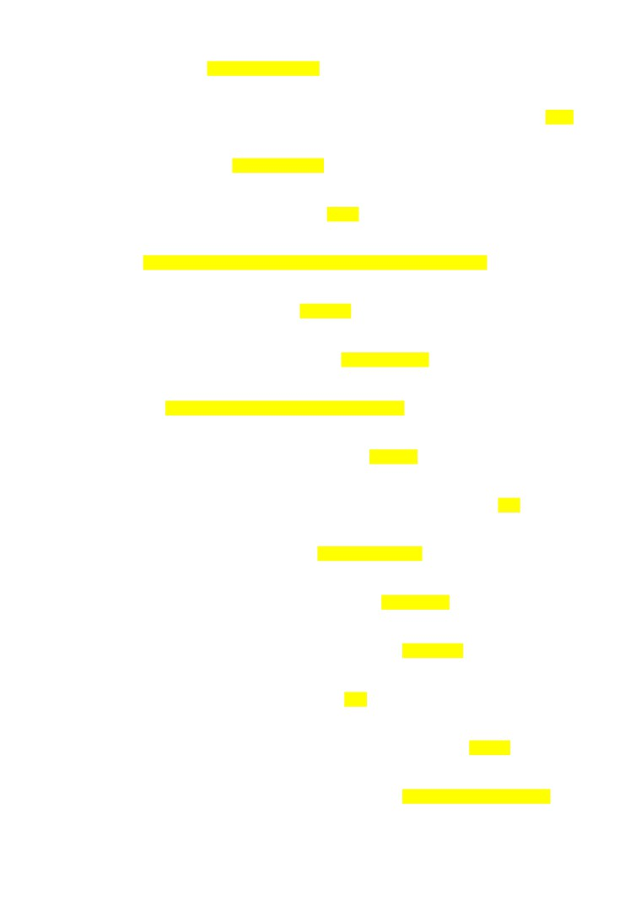
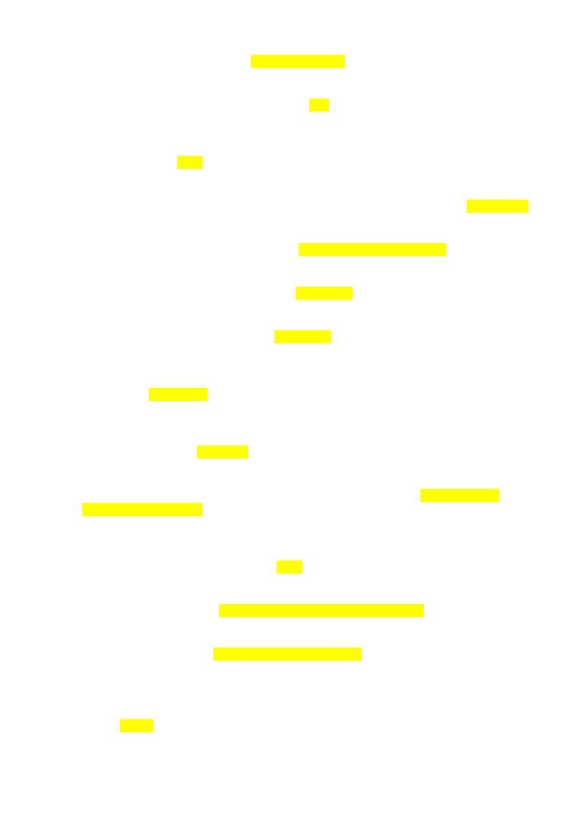
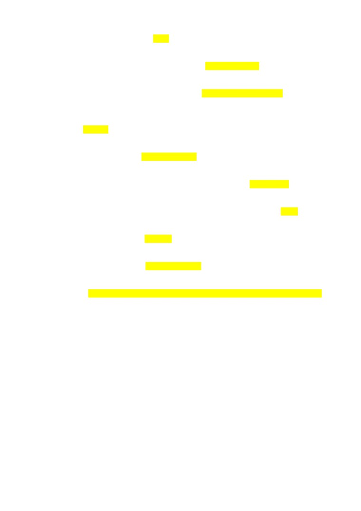

semiotics is research field in theory of culture that studies structure, forms and typology of culture =true
Religious worship of inanimate material objects = Fetishism
The key to understanding of culture; a set of images that are associated with a complex of stereotypes
(mentality) in the mind; cultural unconscious = cultural code
Type of culture that refers to the nonphysical ideas including beliefs, values, rules, norms, morals,
language, organizations, and institutions = non-material
Citadel is the most fortified central part in a medieval city or fortress = True
C. Geertz, V. Turner introduced the symbolic view of culture = True
Among biys-sheshens in the XVI-XVIII centuries, the following is especially distinguished by the
importance of their activities: Kazybek Bey
Representatives of modern art at the beginning of independence = R. Khalfin , M. Narymbetov
For the construction of Nur-Sultan world known architects were invited =Norman Foster , Manfred
Nicoletti, Kisho Kurokawa
Author of collections "1000 songs of the Kazakh people" and "500 Kazakh kyuis and songs" is A.
Zataevich = True
Choral song performed at the Kazakh traditional wedding celebration = Zhar-zhar
Main direction of implementation of Program “Digital Kazakhstan” = digitalization of economic sector
The "House of Wisdom" in Baghdad is: educational institution that united academy, library, observatory
a form of cultural exchange in which one group assumes the beliefs, practices and rituals of another
group without sacrificing the characteristics of its own culture = cultural integration
Globalization is idea about the formation and extending of the relationship and interdependence of
countries in different regions of the world in various fields = True

Belief in a person's ability to influence animals, people and natural phenomena in a special way is: =
magic
Two meanings of signs called͙ = denotation (literal meaning) , connotation (signified meaning)
The main tools for Kazakh’s identity design = Mosques , Graves, Museums
Umay is the goddess of fertility in Turkic mythology and Tengriism and as such related to women,
mothers and children = True
Representatives of zhyrau poetr =Asan-kaygy , Aktamberdy, Bukhar
Charles Morris subdivided the field of semiotics into subfields = Semantics , Syntactics , Pragmatics
Sufism as religious movement still exist in... = Turkey , Pakistan, Egypt
Settled nomadism is modern term implies professionals or entrepreneurs of a particular field who are
not tied to a specific physical place in their work = False
Founder of semiotics : F. Saussure
The main way of transferring knowledge among nomads: oral folk art
Styles of kuys (also playing styles of kuys) =Shertpe , Tokpe
Who introduced the term “cultural studies” as the science of culture =L.White
Chief adviser of Abylai Khan =Bukhar zhyrau
Zhol Tengri is the supreme deity of the sky of the Turkic and Mongolian peoples' = False
in the XV-XVII centuries, Kazakhs used: Arabic graphics

One of Al-Farabi’s work =The Big Book of Music
Meme is units of culture that roughly analogous to genes according to sociobiological theory? =True
Mahmud al-Kashgari work = Divan lugat at-Turk
What is root from the Latin in the word Culture? Colore
Culture is: set of moral, aesthetic and spiritual values filled with symbolic meaning
The earliest type of global cultural code... =Preliterate
Tengrianism/Tengriism is the religion of ... peoples: Turkic-Mongolian.
Mentality is ... prevailing picture of the world in minds of society
Goddess of fertility and motherhood among the nomads: Umai-Ana
Ch. Peirce subdivided semiotics into three parts: semantics, syntactics, pragmatics = True
Author of Book of Wisdom - “Divani Hikmet” =Khoja Akhmet Yassavi
The key concepts of the semiotic definition of culture are ... language, text
Type of nomadism when half of the people move with livestock Semi-settled
Anacharsis is a prominent representative of culture: Saka
Level of culture based on cultural norms and values that shared by one nation National
Main direction of program “Digital Kazakhstan” implementation development of human capital

Famous Sufi in medieval Kazakhstan͙. Khoja Akhmet Yassavi
The greatest work of Mukhtar Auezov is Abai zholy =True
Umay is the goddess of fertility in Turkic mythology and Tengriism and as such related to women,
mothers and children =True
Type of nomadism when half of the time, mostly in winter, people spend as settled
= Semi-nomadic
The main themes of zhyrau poetry in 15th-18th c. Cohesion of tribes , Unity of tribes
Creation of a new type of dwelling - yurt refers to: Bronze Age
The word culture from the Latin root means = to cultivate
The indivisibility, fusion of art, mythology, religion, which characterizes the state of primitive culture, is
called primitive͙ syncretism
System of belief in which humans are said to have kinship or a mystical relationship with a spirit-being,
such as an animal or plant = Totemism
What types of currency were minted in Otrar in the middle of the 13 century? gold dinars, silver-
plated dirhams , copper fels
Personal level of culture based on cultural norms and values that person uses for the sake of making
communication and relationship with others =false
Types of Kazakh culture today =Known and unknown , capital and local culture
Types of global cultural code =preliterate, written, screen, digital
Awareness, self-assessment by the state education of the social group and its representatives -
individuals, both of their equality with others, and their qualitative difference from other
subjects Identity

18 May is International Museum Day =True
Research field in culture studies culture as a sign system Semiotics of culture
Main directions of public consciousness modernization Competitiveness, Pragmatism
A concept that includes elements of social and cultural heritage, passed from generation to
generation:tradition.
The term "civilization" originated: in the 18th century
The term "Tan" (Taң) in the Hunnic and ancient Türkic languages means: dawn, sunrise.
Pubs and plants are main elements of urban culture in medieval cities in Kazakhstan =False
Founder of semiotics in the USA =Ch. Peirce
The main forms of spiritual culture: mythology, religion
Civilization is material and spiritual culture of society at a certain historical stage of its development
1. Symbol is a sign that replaces any object that allows a person to navigate in a specific
situation
2. Language is a sign system that forms the semiotic basis of culture and is a polystructural,
branched, multi-level hierarchy of signs
3. Language and text the key concepts of the semiotic definition of culture
4. Culture consists values, norms, means of activity, models of behavior
5. Cultural norms are laws and standards of social life of people
6. Cultural code is a set of symbols that pass information within a group
7. Mentality is prevailing picture of the world in minds of society
8. Morphological method in cultural studies involves the study of culture from the point of
view its structure and forming
9. Morphology of culture is typical forms and structures of culture
10. Pictography is type of writing in which objects, events and actions are depicted using
symbols
11. Borrowing innovations from another culture occurs in the process of intercultural
communication
12. Changes in culture are associated with the emergence of innovation
13. Culture, as an integral system, is usually divided into material and spiritual culture
14. Material culture is sphere of human material and production activity and its results is
culture
15. Spiritual is sphere of spiritual production and its results is culture
16. In scientific literature culture is used as the concept of "second nature"
17. Word "culture" originally mean as a land cultivation methods
18. Totemism is worshiping animals, plants or natural phenomena as the ancestor and patron
of the genus/tribe
19. Magic is belief in a person's ability to influence animals, people and natural phenomena in
a special way
20. The "House of Wisdom" in Baghdad is educational institution that united academy, library,
observatory
21. Fetishism is belief in the supernatural properties of material objects, both natural and made
by human hands conveys the concept
22. Sufism is a mystical-ascetic trend in Islam
23. Umai-Ana is Goddess of fertility and motherhood among the nomads:
24. Korkyt Ata is the ancestor of the Turkic shamans, musician and zhyrau
25. Asan Kaigy is Medieval poet-zhyrau, who nicknamed "sad"
26. Creation of a new type of dwelling - yurt refers to Bronze Age
27. Tradition is a concept that includes elements of social and cultural heritage, passed from
generation to generation
28. According to the place where the main ancient Türkic runic monuments were found, this
letter began to be called Orkhon-Yenisei
29. The term "Tan" (Taң) in the Hunnic and ancient Türkic languages means dawn, sunrise
30. Kazakh culture belongs to the type of Nomadic civilization
31. Sh. Ualikhanov researched shamanism among Kazakhs
A. Baytursynov is reformer of the Kazakh alphabet was
32. Tengrianism/Tengriism is the religion of Turkic-Mongolian peoples
33. Kurmangazy is an outstanding Kazakh composer - kyushi, the author of the famous kyuis
"Adai", "Saryarka":
34. Mausoleum of Qoja Ahmet Yassayi is located in Turkestan
35. Qoja Ahmet Yassayi was the founder of Turkic Sufism
36. Oral folk art is the main way of transferring knowledge among nomads
37. Primitive syncretism is indivisibility, fusion of art, mythology, religion, which
characterizes the state of primitive culture
38. A.B. Tylor - an outstanding English ethnographer, one of the founders of ethnography and
anthropology, is considered the founder of evolutionary theory of cultural development
39. Mythology, religion are the main forms of spiritual culture
40. The term "civilization" originated in the 18th century
41. Art is an expression of a person's need for a figurative and symbolic expression of
significant moments in his life, it creates a “second reality” for a person
42. The language of culture is totality of all sign methods of verbal and non-verbal
communication, with the help of which culturally significant information is transmitted
43. Inside the mausoleum of Qoja Ahmet Yassayi is a huge pot (Tai Kazan)
44. Ancient Turks worshiped to fire and ancestral spirits
45. Types of economic activities that the Turks were engaged in nomadic and semi-nomadic
cattle breeding and agriculture
46. Runic writing is records, mostly of a memorial nature, were knocked out on rocks,
boulders, coins and other objects.
47. Rukhani Zhagyru is the programm article of the First President of Kazakhstan, focused on
the revival of spiritual values of Kazakhstani people, taking into account all modern risks
and challenges of globalization:
48. "Tugan zher" is a special project of the Rukhani Zhagyru program, aimed at the
development of a “small homeland”, involving citizens in the development of their native
land, and also aimed at solving social problems.
49. Astana-Baiterek is the monument in Astana, the most important and recognizable landmark
of the city, was built as a symbol of the transfer of the capital from Almaty to Akmola in
1997, symbolizes a new stage in the life of the people.
50. Culture is set of moral, aesthetic and spiritual values filled with symbolic meaning
51. Civilization is totality of the spiritual and moral values
52. Matchmaking is a part or stage of the Kazakh wedding in the Middle Ages
53. Anacharsis is a prominent representative of Saka culture
54. Kazybek bey distinguished biy-sheshen in the XVI-XVIII centuries
55. Mosque one of the main element of Muslim cities in Medieval Kazakhstan
56. Veneration of the goddess Umai is a manifestation of traditional Turkic culture as respect
for mothers
57. Ahmet Yassaui is Great thinker of the East, representative of Sufism in medieval
Kazakhstan
58. In the XV-XVII centuries Kazakhs used Arabic graphics
59. The Kazakhs' veneration of their ancestors is based on ancestor cult
60. "100 new faces of Kazakhstan" is the project, initiated by the first President of the Republic
of Kazakhstan the purpose of which is to tell the stories of Kazakhstani people aged 20 to
50 years, who by their successes, achievements, talent and work contribute to the
development of modern Kazakhstan.
61. "Digital Kazakhstan" is the program for accelerating the pace of economic development of
the republic and improving the quality of life of the population through the use of digital
technologies
62. Areas of implementation of program “Digital Kazakhstan” includes transition to a digital
state
63. One of main directions of program “Digital Kazakhstan” implementation is development
of human capital
64. One of main directions of implementation of Program
“Digital Kazakhstan” is
digitalization of economic sectors
1. Cultural problems in globalization
- adequate understanding of identify
- risks of extinction of national culture
2. Example of cultural institutions
- museums, archives, libraries
3. Two different theoretical schools that debates about the future
-theory of multiculturalism
modernization
4. Ruhani Zhangyru is national idea of KZ
-False
5. Modern Kazakhstani painter who uses plastic bags to create paintings
-Saule Suleimenova
6. Author of Kyz-Zhibek opera
- Yevgeny Brusilovsky
7. Architect, author of Pyramid or Place of Peace and Reconciliation in Nur-Sultan
- Norman Foster
8. In the pre=war Soviet KZ elimination of the illiteracy of the population and creating
professional
education has been a top priority
TRUE
9. Examples of heroic epics
- Koblandy batyr
- Alpamys batyr
10. How F. de Saussure called formal discipline about signs?
- semiology
11. Type of nomadism when half of the time, mostly in winter, people spend as settled
- semi-nomadic
12. Who used culture as a cultivation of the soul?
- Cicero
13. Word SUFISM comes from Arabic suf that means
- WOOL
14. Tengri - the supreme deity of the sky of the Turkic and Mongolian peoples?
True
15. Who compiles a list of more than 200 definitions of culture in their book?
- c. Kluckhohn
16. Al-Farabi work
- Treatise on the views of the Residents of the Virtuous City
17. The earliest type of global culture code
- Preliterate
18. Ch. Morris subdivided semiotics into 3 parts
- semantics
- pragmatics
- syntactic
19. Basis of ancient Turkic writing?
- sogdian writing
20. Adjustment of human communities, social groups and individuals to changes of
naturegeographic and historical living conditions
- cultural adaptation
21. M. Dulatov work
- Oyan qazaq(Awake Kazakh)
- Baqitsiz Jamal (Unhappy Jamal)
22. Most popular art genres in 90s
- performance
23. First Kazakh sound movie
-
24. Types of Kazakh culture in modern time
- capital(urban) culture
- local (rural) culture
25. Pragmatism
- batyr( ……. With other social groups)
26. Main tools for KZ identify places of memory
- museums
- graves
27. Foreign masters of world architecture were invited to build Astana
- Kisho Kurokawa
- Normad Foster
28. National identification expressed in the thesis we are like that and we are different, we are
the
best
- FALSE
29. The word from Kazakh means brave, courage man who has skilled military art
- batyr
30. First university that opened in Almaty in 1928
- Kazakh national pedagogical university named after Abai
31. He considered being an unsurpassed author and perfomer of kyuis of the shetpe style
- Tattimbet
32. Willingness to accept behavior and beliefs that are different fron your own although you
might
not agree with approve of them
- tolerance
33. Title of the war novel Baurzhan Momysh-Uly was a main hero
- Volkolamsl highway
34. Life cycle rite is terms for important transition period in human’s lofe in KZ culture
-FALSE
35. The concept of cultural, political social improvement through a specific set of dtateles
initiatives
and polices called
- modernization
36. Transformation of the globalization process on a local level
- regionalization
37. Racial tolerance is acceptance of sexual diversity in society
- False
38. State program in 2004 that aimed at studying restoring and preserving the historical and
ccultural heritage of the country
- Cultural Heritage
39. The idea about the formation and extending of the relationship and interdependence of
countries in different regions of the world in various
_ globalization
40. Two critical trends in the development of contemporary culture
- integration of various cultures into a single planetary culture
-localization of national state cultures
41. Architect and designer Norman Foster designed general plan of Nur-Sultan
- False
42. Famous Kazakh pointer in Soviet Kz
- Kasteev
43. Alikhan Bukeykhanov reformed Kazakh writing based on Arabic script
- FALSE
44. Kanysh Satbayev was the first president of academy of science in KZ SSR
- TRUE
45. Levels of identity
- state
- personal
46. Styles of playing kuys
- tokpe
- shertpe
47. Trends in the contemporary museum
- introducing information technologies
- transformation from the exhibition space into….
48. Main political and social directions in Soviet KZ
- communism
- socialism
49. Transformation of the globalization process on a local level
- glocalization
50. Examples of cultural institutions
- cultural centres
- art galleries
- libraries
51. Examples of Kazakh lyrical epics
- Kozy-Korpesh - Bayan Sulu
- Kyz Zhibek
52. First Kazakh opera in KZ
- Birzhan SARA
53. Racial tolerance is acceptance of sexual diversity in society
- False
54. The idea about the formation and extending of the relationship and interdependence
- globalization
55. Genre of zhyrau poetry
- tolgau
56. Mukhtar Auezov work
- Abai Zholy
- Enlick Kebek
57. State programs to strengthen the civil identify
- Mangilik el (Eternal country)
- Menin Elim (My country)
58. Main directions of public consciousness modernization
- competitiveness
- pragmatism
59. Famous zhyrau in 15 - 18
- Bukhar
- Kaztugan
60. The first pioneers of painting in KZ who initiated a painting studio in 1920
- Khludov
61. Problems for the development of the modern KZ film industry
- lack of young professional cadres
- deficit of fundings
62. Representatives of Alash party
- Baitursynov
- Bukeykhanov
63. The word culture from the latin root means
- to cultivate
64. Level of culture based on cultural norms and values that shares by all people around the
world
- universal
65. Culture can be viewed as the external manifestation of a society
- False
66. Equal respect to various cultures in a society, promoting cultural diversity and cultural
differences
- multiculturalism
67. Most common genres of oratory in 16-18
- epics
- tolgau
68. Current name of Kazakh state university named after Kirov
- Al-Farabi Kazakh national university
69. Choral song perfomed on weddings
- zhar zhar
70. Chinese made paper
71. Educated Scythian wha was respected as a doctor
Toksarid
72. Who introduce symbolic view of culture
- Greetz
- Turner
73. One of the main elements in the medieval city in KZ
- bathouses
- mosques
74. Type of culture - elite culture
high
75. Types of global culture code
- screen
- preliterate
- written
76. What style of life was appeared in mediavel KZ
- urban
77. What existence of units of culture are rougly analogous to genes in evolutinal
- meme
78. The letters in a set of related alphabet
- runes
79. Modern understanding of culturology as a discipline in KZ
- a new philosophy of culture, noticeably more ideologically commited
80. Professionals or entrepreneurs of a particular field who are not ties to a specific physical
place in
their work
- digital nomad
81. Level of culture based on cultural norms and values that shared by all people around the
world/
- universal
82. The main work of Barthes
- Mythology
83. Type of culture that is knows like mass culture
- low
84. Worldview based on belief in one god
- monotheism
85. . Who in 1871 explained that culture “taken in its wide ethnographic sense, is that complex
whole
which includes knowledge, belief, art, morals, law, custom...”
-E. Taylor
86. F. Saussure - Founder of semiotics
87. National - Level of culture based on cultural norms and values that shared by one nation
88. Otyrar - Name of city on the Great Silk Road in medieval Kazakhstan
89. Most common genres of oratory in the 16-18 centuries - tolgau, epics
90. Symbol - is a sign that replaces any object that allows a person to navigate in a specific
situation
91. Language - is a sign system that forms the semiotic basis of culture and is a polystructural,
branched, multi-level hierarchy of signs
92. Language and text the key concepts of the semiotic definition of culture
93. Culture consists values, norms, means of activity, models of behavior
94. Cultural norms are laws and standards of social life of people
95. Cultural code is a set of symbols that pass information within a group
96. Mentality is prevailing picture of the world in minds of society
97. Morphological method in cultural studies involves the study of culture from the point of
view its structure and forming
98. Morphology of culture is typical forms and structures of culture
99. Pictography is type of writing in which objects, events and actions are depicted using
symbols
100. Borrowing innovations from another culture occurs in the process of intercultural
communication
101. Changes in culture are associated with the emergence of innovation
102. Culture, as an integral system, is usually divided into material and spiritual culture
103. Material culture is sphere of human material and production activity and its results
is culture
104. Spiritual is sphere of spiritual production and its results is culture
105. In scientific literature culture is used as the concept of "second nature"
106. Word "culture" originally mean as a land cultivation methods
107. Totemism is worshiping animals, plants or natural phenomena as the ancestor and
patron of the genus/tribe
108. Magic is belief in a person's ability to influence animals, people and natural
phenomena is a special way
109. The "House of Wisdom" in Baghdad is educational institution that united
academy, library, observatory
110. Fetishism is belief in the supernatural properties of material objects, both natural
and made by human hands conveys the concept
111. Sufism is a mystical-ascetic trend in Islam
112. Umai-Ana is Goddess of fertility and motherhood among the nomads:
113. Korkyt Ata is the ancestor of the Turkic shamans, musician and zhyrau
114. Asan Kaigy is Medieval poet-zhyrau, who nicknamed "sad"
115. Creation of a new type of dwelling - yurt refers to Bronze Age
116. Tradition is a concept that includes elements of social and cultural heritage,
passed from generation to generation
117. According to the place where the main ancient Türkic runic monuments were
found, this letter began to be called Orkhon-Yenisei
118. The term "Tan" (Taң) in the Hunnic and ancient Türkic languages means dawn,
sunrise
119. Kazakh culture belongs to the type of Nomadic civilization
120. Sh. Ualikhanov researched shamanism among Kazakhs
121. A. Baytursynov is reformer of the Kazakh alphabet was
122. Tengrianism/Tengriism is the religion of Turkic-Mongolian peoples
123. Kurmangazy is an outstanding Kazakh composer - kyushi, the author of the
famous kyuis "Adai", "Saryarka":
124. Mausoleum of Qoja Ahmet Yassayi is located in Turkestan
125. Qoja Ahmet Yassayi was the founder of Turkic Sufism
126. Oral folk art is the main way of transferring knowledge among nomads
127. Primitive syncretism is indivisibility, fusion of art, mythology, religion, which
characterizes the state of primitive culture
128. A.B. Tylor - an outstanding English ethnographer, one of the founders of
ethnography and anthropology, is considered the founder of evolutionary theory of
cultural development
129. Mythology, religion are the main forms of spiritual culture
130. The term "civilization" originated in the 18th century
131. Art is an expression of a person's need for a figurative and symbolic expression of
significant moments in his life, it creates a “second reality” for a person
132. The language of culture is totality of all sign methods of verbal and non-verbal
communication, with the help of which culturally significant information is transmitted
133. Inside the mausoleum of Qoja Ahmet Yassayi is a huge pot (Tai Kazan)
134. Ancient Turks worshiped to fire and ancestral spirits
135. Types of economic activities that the Turks were engaged in nomadic and seminomadic
cattle breeding and agriculture
136. Runic writing is records, mostly of a memorial nature, were knocked out on rocks,
boulders, coins and other objects.
137. Rukhani Zhagyru is the programm article of the First President of Kazakhstan,
focused on the revival of spiritual values of Kazakhstani people, taking into account all
modern risks and challenges of globalization:
138. "Tugan zher" is a special project of the Rukhani Zhagyru program, aimed at the
development of a “small homeland”, involving citizens in the development of their native
land, and also aimed at solving social problems.
139. Astana-Baiterek is the monument in Astana, the most important and recognizable
landmark of the city, was built as a symbol of the transfer of the capital from Almaty to
Akmola in 1997, symbolizes a new stage in the life of the people.
140. Culture is set of moral, aesthetic and spiritual values filled with symbolic meaning
141. Civilization is totality of the spiritual and moral values
142. Matchmaking is a part or stage of the Kazakh wedding in the Middle Ages
143. Anacharsis is a prominent representative of Saka culture
144. Kazybek bey distinguished biy-sheshen in the XVI-XVIII centuries
145. Mosque one of the main element of Muslim cities in Medieval Kazakhstan
146. Veneration of the goddess Umai is a manifestation of traditional Turkic culture as
respect for mothers
147. Ahmet Yassaui is Great thinker of the East, representative of Sufism in medieval
Kazakhstan
148. In the XV-XVII centuries Kazakhs used Arabic graphics
149. The Kazakhs' veneration of their ancestors is based on ancestor cult
150. "100 new faces of Kazakhstan" is the project, initiated by the first President of the
Republic of Kazakhstan the purpose of which is to tell the stories of Kazakhstani people
aged 20 to 50 years, who by their successes, achievements, talent and work contribute to
the development of modern Kazakhstan.
151. "Digital Kazakhstan" is the program for accelerating the pace of economic
development of the republic and improving the quality of life of the population through
the use of digital technologies
152. Areas of implementation of program “Digital Kazakhstan” includes transition to a
digital state
153. One of main directions of program “Digital Kazakhstan” implementation is
development of human capital
154. One of main directions of implementation of Program “Digital Kazakhstan” is
digitalization of economic sectors
155. Global trends in the development in modern civilization
- formation of an information society
- manifestation of mass culture
156. The concept of cultural political social economical improvements through a specific set
of state led initiatives and policies called
- modernization
157. Famous Sufi in mediavel KZ
- Qoja Akhmed
158. Who introduced the term cultural studies as the science of culture
- White
159. Name of city on the Great silk road in medieval Kazakhstan
- Otrar
160. What is a root the Latin in the world Culture
- colore
1. Type of nomadism when half of the time, mostly in winter, people spend as settled
-Semi-nomadic
2. Level of culture based on cultural norms and values that shared by one nation
-National
3. Who compiled a list of more than 200 different definitions of culture in their book?
-A.Kroeber, C. Kluckhohn
4. Al-Farabi work
-Treatise on the views of the Residents of the Virtuous City
5. Famous Sufi in medieval Kazakhstan
-Khoja Akhmet Yassavi
6. Ch. Morris subdivided semiotics into three parts
-semantics, syntactics, pragmatics
7. The most famous and provocative book of Olzhas Omarovich Suleimenov
-AZ-i-IA
8. Who in 1871 explained that culture “taken in its wide ethnographic sense, is that complex
whole which includes knowledge, belief, art, morals, law, custom...”
-E. Taylor
9. Tengri - the supreme deity of the sky of the Turkic and Mongolian peoples
-True
10. The earliest type of global cultural code
-Preliterate
11. A diverse range of human activities involving the creation of visual, auditory or
performing artifacts
-Art
12. Educated Scythian who was respected by ancient Greeks as a good doctor
-Toksarid
13. How F. de Saussure called formal discipline about signs?
-Semiology
14. What did Gilbert Clotaire Rapaille explain in this phrase: “This is the unconscious
meaning of this or that thing or phenomenon, be it a car, food, relationships, even a
country in the context of the culture in which we are brought up”
-Cultural code
15. One of main elements in the medieval city in Kazakhstan
-bathhouses, mosque
16. Type of culture also known as an elite culture
-High
17. What existence of units of culture are roughly analogous to genes in evolutionary
biology?
-Meme
18. Types of global cultural code
-Preliterate, written, screen
19. Mahmud al-Kashgari work
-Divan lugat at-Turk
20. What style of life was appeared in medieval Kazakhstan?
-Urban
21. Form of religious belief based on belief that objects, places and creatures all possess a
distinct spiritual essence
-Animism
22. Modern understanding of culturology as a discipline in Kazakhstan
- A new philosophy of culture, noticeably more ideologically committed
23. The letters in a set of related alphabets of ancient turks called…
-Runes
24. Specific type of economic activity and type of society, where a majority of people engage
with that of extensive nomadic pastoralism
-Nomadism
25. Word “Sufism” comes from Arabic suf that means
-Wool
26. Level of culture based on cultural norms and values that shared by all people around the
World? -Universal
27. Worldview based on belief in one God
-Monotheism
28. Who introduced the symbolic view of culture?
-C. Greetz, V. Turner
29. Type of nomadism when half of the people move with livestock
-Semi-settled
30. Founder of semiotics
-F.Saussure
31. The word culture from the Latin root means
-To cultivate
32. De Saussure called formal discipline about signs semiotics
-False
33. Religious worship of inanimate material objects
-Fetishism
34. What root from the Latin in the word Culture?
-Colore
35. Suburban craft settlements located outside of shakhristan
-Rabad
36. Research field in cultural studies that investigates sign systems?
-Semiotics
37. Level of culture based on cultural norms and values that person uses for the sake of
building
38. communication with others?
-Interpersonal
39. The main work of Roland Barthes
-Mythologies
40. Type of culture also known as a mass-culture
-Material
41. Professionals or entrepreneurs of a particular field who are not tied to a specific physical
place in their work
-Digital nomad
42. C. Greetz, V. Turner introduced the symbolic view of culture
-True
43. Who were first made paper?
-Chinese
44. Examples of cultural institutions
-Churches, mosques, museums
45. Main political and social directions in Soviet Kazakhstan
-Socialism, communism
46. Cultural problems in globalization time
-Adequate understanding of identity
-Risk of extinction of national culture
47. Famous Kazakh zhyrau in XV-XVIII c.
-Kazturgan, Bukhar
A. Kazakh writer, who used pen name (pseudonym) as ‘son of steppe’ -
A.Bukeykhanov
48. The idea bout the formation and extending of the relationship and interdependence of
countries in different regions of the world in various fields (economics, finance,
informatics, advanced technologies…) -Globalization
49. Famous Kazakh painter in Soviet Kazakhstan -A.Kasteev
50. Two different theoretical schools that debates about the future of the cultural policy
-Theory of multiculturalism
-Theory of modernization
51. Trends in the contemporary museum
-Introducing information technology
-Transformation from the exhibition space into a contact space
52. Main directions of public consciousness modernization
-Competitivities, pragmatism
53. Racial tolerance is acceptance of sexual diversity in society
-False
54. Genre of zhyrau poetry
-Tolgau
55. First Kazakh opera in Kazakhstan
-Birzhan and Sara
56. State program in 2004 that aimed at studying, restoring and preserving the historical and
cultural heritage of the country
-Cultural Heritage
57. Transformation of the globalization process in a local level
-Glocalization
58. Two critical trends in the development of contemporary world culture
-Localization of national-state cultures
-Integration of various cultures into a single planetary culture
59. Examples of cultural institutions
-Cultural centres, libraries, art galleries
60. Examples of Kazakh lyrical epics (эпос)
-Kozy-Korpesh - Bayan-sulu
-Kyz-Zhibek
Type of culture also known as a mass-culture is elite culture False
Two of main elements in the medieval city in Kazakhstan mosques Bathhouses
The main character of novel lexander Bek “Volokolamsk Highway” Bauyrzhan Momyshuly
Word “Sufism” comes from Arabic suf that means silk False
Glocalization is defined as the Transformation of the globalization process on a local level True
Culture understand as the internal character of a society True
1) National idea of Kazakhstan that was ::: Eternal country/Mangilik el
2) Who in 1871 explained that culture “taken in its wide ::: Tylor
3) Dawkins introduced the concept of meme ::: true
4) Culture, as an integral system, is usually ::: material and spiritual
5) Meaning, value if sign called ::: Signified
6) The symbol of the new capital ::: monument “ stana Bait”
7) The triumphal arch in the city of Nur-Sultan ::: mangilik El
8) The greatest work of Mukhtar Auezov is ::: true
9) Zhol Tengri is the supreme deity of the sky ::: False
10) The word culture from the Latin root ::: to cultivate
11) The general architectural plan of Astana was made by k. Kurawo ::: true
12) Central direction of cultural transformation in the pre-war ::;false
13) Cultural norms are ::: laws and standards
14) Main directions of public consciousness ::: competiti and pragmatism
15) Who used “culture” as a cultivation of the soul ::: cicero
16) The main themes of zhyrau poetry in 15th ::: Cohesion of tribes and Unity of tribes
17) The term “civilization” originated ::: in the 18th century
18) Medieval poet-zhyrau nicknamed “sad” ::: san Kaigy
19) Goddess of fertility and motherhood among ::: Umai-Ana
20) Two meanings of signs called ::: denotation and connotation
21) The main tools for Kazakh’s identity design ::: Museums and mosques
22) The programm article of the First President ::: Rukhani Zhangyru
23) reas of implementation of program “Digital Kazakhstan” include ::: transition to a digital state
24) Levels of identity ::: personal and state
25) Personal level of culture based on culture norms and values ::: false
26) Lyrics epics ::: Kozy-korpesh and kyz- zhibek
27) Morphological method in cultural studies involves the study ::: its structure and forming
28) Type of nomadism when half of the people move ::: Semi-settled
29) Culture as an iceberg include invisible ::: Emotions and Beliefs and Thoughts
30) What R. Dawkins defined as a unit of cultural ::: meme
31) Kazakh culture belongs to the type of ::: nomadic
32) Culture understand as the internal character ::: true
33) Accelerating the pace of economic development of the republic and ::: Digital NUURKazakh
34) Glocalization is defined as the transformation of the ::: true
35) Word “Sufism” comes from the rabic ::: false
36) The main character of novel Alexander Bek ::: Baurzhan ATAmyzgoo knsh
37) tho of main elements in the medieval city ::: mosques and bathhouses
38) Level of culture based on cultural norms and values ::: universal
39) Creation of a new type of dwelling - yurt ::: Bronze age
40) Type of culture also known as a mass ::: false
41) A concept that includes elements of social and cultural ::: tradition
42) Famous Sufi in medieval Kazakhstan ::: Khoja Akhmet Yassaui
43) process and time is takes a person ::: cultural adaption
44) Author of collections “1000 songs of the Kazakh people” and ::: true
45) Type of culture that refers to the nonphysical ideas including beliefs ::: non-material
46) Representatives of zhyrau poetry ::: Asan-Kaygy and Aktamberdy and Bukhar
47) Scientist who researched shamanism among Kazakhs ::: Sh. Uallikhanov
48) Belief in a person’s ability to influence animals, people ::: magic
49) Ancient Turks worshiped ::: fire and ancestral
50) Reformer of the Kazakh alphabet was ::: A. Baytursynov
51) Citadel is the most fortified central part in a medieval ::: true
52) Author of Book of Wisdom - “Divani Hikmet” ::: Khoja Akhmet
53) The main forms of spiritual culture ::: mythology and religion
54) Globalization is idea about the formation and extending ::: true
55) Main genres of zhyrau ::: tolgau
56) The culture code is ::: a set of symbols that
57) The language of cultural is ::: totality of all sign
58) The project, initiated by the first President of the ::: 100 new faces of
59) The type of writing in which objects, events and actions are ::: pictography
60) An outstanding Kazakh composer - kyushi, ::: Kurmangazy
61) The first Kazakh composer who an ::: M. Tulebaev
62) Awareness, self-assessment by the state education ::: identity
63) F. de Saussure called formal discipline ::: false
64) Mystical Islamic belief and practice in medieval time ::: Sufism
65) Type of culture small group that join by shared interests, hobby ::: Sub-culture
66) Type of culture also known as an elite ::: high
67) Kazakh State University named after Kirov nowadays ::: Kazakh National University named Al-Far
68) Ch. Peirce subdivided semiotics into three parts ::: true
69) A sign that replaces any object that allows a persin ::: symbol
70) Main elements of Muslim cities in Medieval ::: mosque
71) Choral song performed at the Kazakh traditional ::: Zhar-zhar
72) Modern building in Nur-Suultan that has ::: Pyramid of palace
73) Chief adviser of Abylai Khan ::: Bukhar zhyrau
74) Main direction of implementation of Program ::: digitalization
75) The most famous and provocative book of ::: true
76) The “House of Wisdom” in Baghdad :: educational institution
77) What was originally meant by the word ::: cultivation methods
78) inculturation is the process by which a person ::: true
79) Umay is the goddess of fertility in Turkic ::: true
80) Meaning, value of sign called ::: Signfied
81) A special project of the Rukhani Zhagyru program ::: tugan zher
82) Main directions of public consciousness modernization ::: Openness of know and cult of know
83) Two critical trends in the development of contemporary ::: localization and integration
84) Settled nomadism is modern term implies professions ::: false